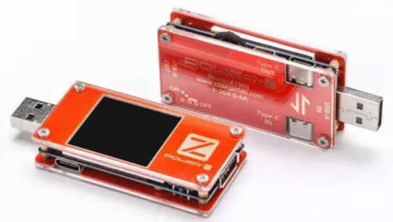

拆解评测工具
如果想要自己评测芯片或电路板的电量电压，可以用：
POWER-Z KT001
POWER-Z KT001- 长什么样：
- 产品外形：
- 
- 使用起来什么样：
- 产品外形：
- 功能：测试充电电压及电流
- 支持设备类型：USB PD Type-C的设备
- 市面上所有手机、充电宝、充电器、以及采用USB PD Type-C笔记本、平板电脑
- 所属公司：
ChargerLAB- 主页：http://www.chargerlab.com
- 一家专注于充电领域的英文网站
- 所属产品系列：
POWER-Z- 还有其他产品：
POWER-Z KM001POWER-Z FL001
- 还有其他产品：
- 长什么样：